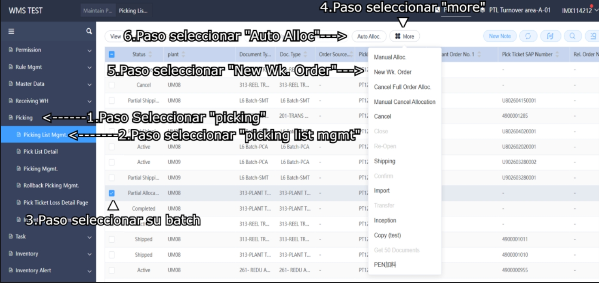
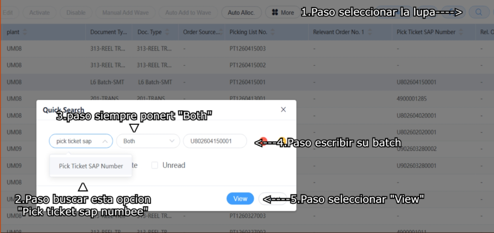
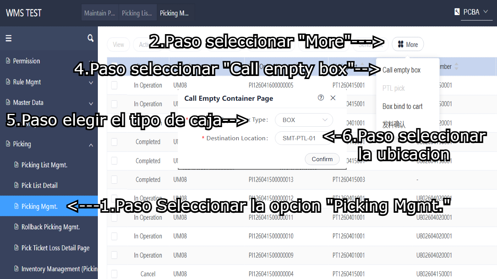
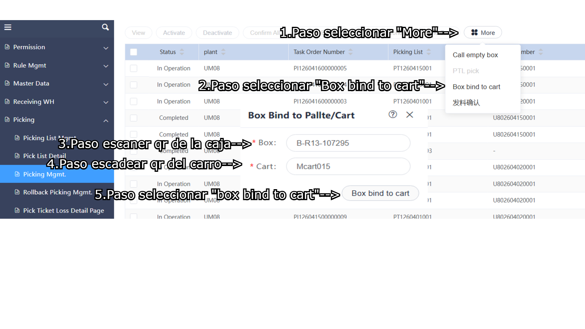
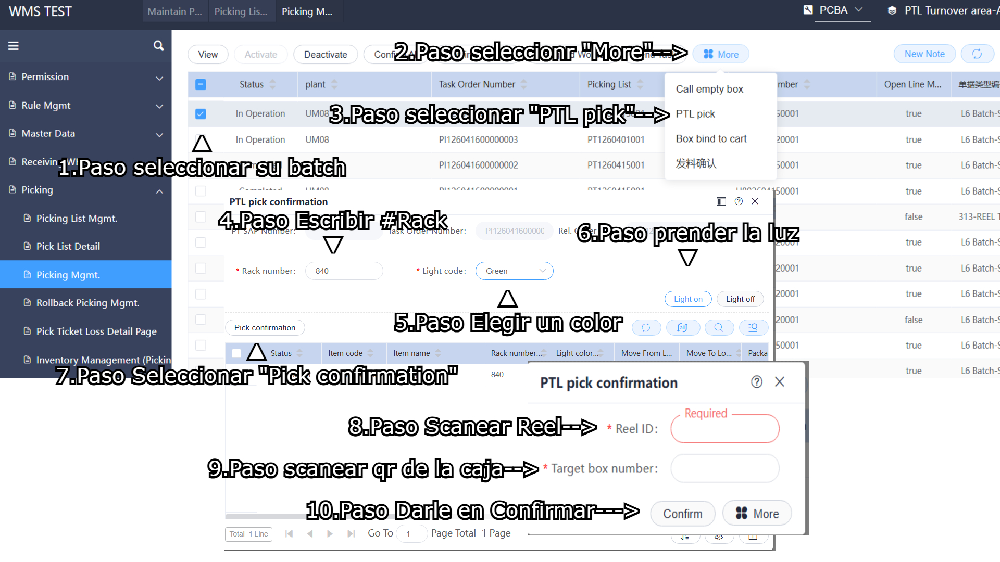
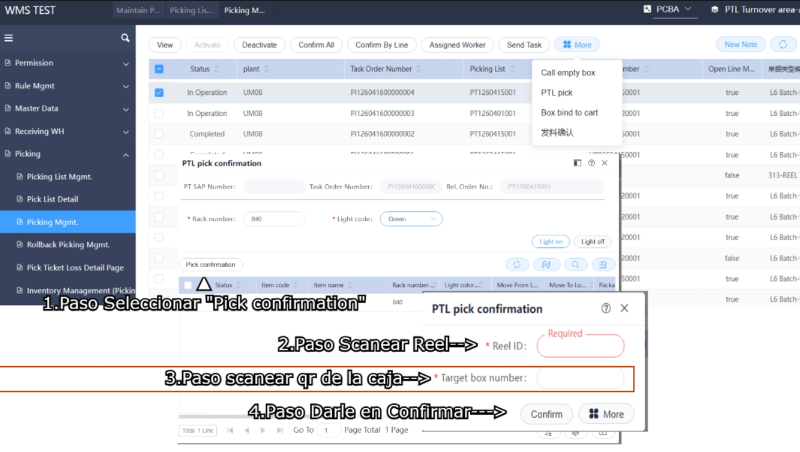
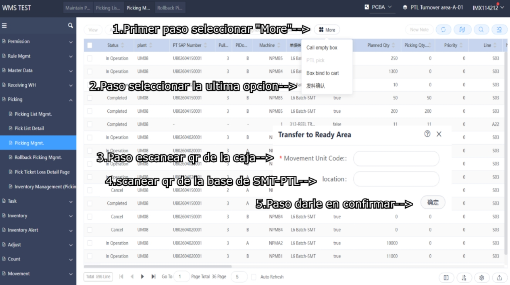

• Para iniciar a bachear ocupa irse en la pestaña de Picking, de ahi se abriran varias pestañas de las cuales primero usaremos la de Picking List Mgmt.
• Despues seleccionara su batch, una ves seleccionado le dara donde dice more (donde se le abrira un menu); Seleccionara New Wk. order (a creado un nocumento para bachear).
• y para finalizar le dara en Auto alloc (son los #de parte que tendra de bachear)
AYUDA VISUAL

• Para encontrar su batch, puede filtrar en la lupa que se encuentra en superior lado derecho, una ves picado lo puede filtrar como indica la imagen;

• Ya una ves acabado su documento, sin cambiar de pagina se ira a la pestaña de Picking Mgmt.
• Una ves estanado en la pestaña iremos a la opcion de "more" para Pedir una caja.
• le daremos en "Call empty box"; Saldra una pestaña con 2 opciones, la primera opcion es para pedir que tipo de caja queremos (BOX= CAJA VACIA,R13= CAJA PARA ROLLOS MEDIANOS, R7= CAJA PARA ROLLOS CHICOS). La segunda opcion es para escaner donde queremos que nos traigan la caja. Al finalizar seleccionar confirmar; ejemplo

• Una ves y ya haya llegado su caja hay que meterlo en su carro (cada caja y cada carro tendran un qr para escanera). Para hacerlo sin moverse de pestaña ira a "More" seleccionara "Box Bind to cart", donde escaneara el qr de la caja y de su carro para posteriormente meter la caja al carro, como se muestra en la imagen

• Una ves tenido la caja en su auto, procedemos sin cambiar la pagina en seleccionar su batch, una ves seleccionado su batch iremos a "More" y en la opcion de "PTL pick"
• Se nos abrira una ventanita donde saldra nuestra lista que tendremos que bachear, si en la lista sale que esta en un rack de PTL, lo que haremos sera como se muestra en la imagen.

• Si lista no esta en ptl o ya haya terminado y solo quedan rollos manuales, solo picaremos en "Pick confirmation" y scanear reel y la caja, como se muestra en la imagen:

• Una ves Terminado de Bachear nuestro documento lo que aremos es ir a la base donde hagarramos la caja, en la misma pagina (Picking Mgmt.) mandaremos el material a fider, nos iremos a "More" y en la ultima opcion, una ves estando escanearemos nuestra caja y la base donde vendra un robot a llevarselo. Para esto tendremos que dejar la caja en la base
